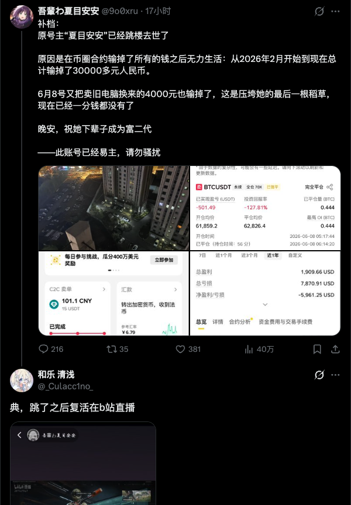

这个人如果与環状線于 5 月 7 日切割的 HuamanX09 是一个人的话，那么此自杀讣告为真的可能性比较低。
一方面，HuamanX09 在環状線与之切割以前，就多次提到要轻生，但是一直都没有真正行动过。
另一方面，HuamanX09 所在城市目前为止还没有任何符合其外貌描述的人的轻生案件的报道或传闻。
还请各 位推友谨慎表示哀悼。但如果此讣告为实，那么環状線也将表示哀悼。同时奉劝各位，没有足够金融知识的不要接触高杠杆合约，切记此行为与赌博没有任何区别！

一方面，HuamanX09 在環状線与之切割以前，就多次提到要轻生，但是一直都没有真正行动过。
另一方面，HuamanX09 所在城市目前为止还没有任何符合其外貌描述的人的轻生案件的报道或传闻。
还请各 位推友谨慎表示哀悼。但如果此讣告为实，那么環状線也将表示哀悼。同时奉劝各位，没有足够金融知识的不要接触高杠杆合约，切记此行为与赌博没有任何区别！

补档：
原号主“夏目安安”已经跳楼去世了
原因是在币圈合约输掉了所有的钱之后无力生活：从2026年2月开始到现在总计输掉了30000多元人民币。
6月8号又把卖旧电脑换来的4000元也输掉了，这是压垮她的最后一根稻草，现在已经一分钱都没有了
晚安，祝她下辈子成为富二代
——此账号已经易主，请勿骚扰 https://t.co/pPYfRWgxhQ
原号主“夏目安安”已经跳楼去世了
原因是在币圈合约输掉了所有的钱之后无力生活：从2026年2月开始到现在总计输掉了30000多元人民币。
6月8号又把卖旧电脑换来的4000元也输掉了，这是压垮她的最后一根稻草，现在已经一分钱都没有了
晚安，祝她下辈子成为富二代
——此账号已经易主，请勿骚扰 https://t.co/pPYfRWgxhQ